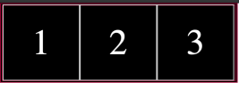

实验12 文字连续滚动
² 实验内容
n Dreamweaver cs6软件创建站点
n 熟练掌握animation动画制作
n 掌握位移动画制作
n 插入背景音乐
² 设计步骤
n 实验已经完成的设计
1、本实验提供了exp12.html文件，该文件已经设计好了一个div和一个ul，ul中包含3个li，如图1所示。

图1 exp12.html网页显示效果图
2、已经设计了每个li宽度为100px，高100px，li左浮动。div背景色是黑色，采用相对定位。ul采用绝对定位。具体代码如图2所示。
图2 exp12.html已有的代码
n 动画设计
对ul设计动画（提示：修改left属性，自己计算开始和结束时left的值）
动画开始时，“1”在div的最右边
动画结束时，“3”刚好离开div的最左边
图2 动画设计图
2、修改动画
本实验要求动画只在div层里看到，在浏览器其他位置看不到。但是动画开始时，ul在div外，看起来不自然。修改的办法：
（1）在</div>后加一个标记<section></section>(功能与div一样)
（2）对section设计样式
固定定位；
top为0px；
高度>ul的高度；
宽度大于ul的宽度；
左自己计算（不要遮盖div区域，刚好遮盖div右边开始的区域）；
背景色为白色；
z-index为2；
3、完善动画
要让动画连续播放，还有需要改进的地方。动画在字符“3”移出div后，字符“1”才重新出现，因此有一段空白区域，显得不连贯。如图3所示。
图3 动画执行过程中有一段空白
解决办法是把空白区域用“1、2、3”填上。因此html标记里有2组“1、2、3”。一组是用来循环显示的“1、2、3”，一组是用来填补空白的“1、2、3”。因此需要作如下改动：
1、增加html标记
将3个li标记复制粘贴一份，这样ul标记中就有6个li标记了。分别是1、2、3、1、2、3。目的是为了保证当一组“1、2、3”移出div后还有一组“1、2、3”在div中，如图4所示。
图4 增加一组li后动画效果图
2、修改ul标记的宽度
ul标记的宽度改为618px。（由于边框线条有宽度，数字可以自己测试，以刚刚装下所有数字为好）
3、修改动画
为了动画连贯，没有停顿感，ul动画开始时的left设置为0；结束时的left值自己调试，在-300范围内调试（懂得动画原理后就比较容易调试，第2轮动画开始时，第1组的“1、2、3”是从left为0的地方开始的，因此要保证第1轮结束时第1组的“1、2、3”中“3”的右边刚好移到外框的左框）。
n 最后效果
打开网页时，div中数字“1、2、3”不断地从左到右滚动。
² 额外练习
掌握了数字的滚动后，可以设计一个网页，把本实验提供的3张图片滚动起来，并配上背景音乐。
提示：
1、3张图片的大小统一为1000*555
2、3张图片放到3个div中，每个div宽1000，高555
3、3个div放到一个section中，3个div左浮动，每个div相隔一段距离。
4、section设计宽度要能刚好装下3个div，可以加border。
5、section设计为绝对定位（它相对于body绝对定位）。
6、在动画没有开始时可以发现一个section中，只能同时看到1张半图片，因此当设计动画时，当3张图片都移出section后，只需要2张图片来填补空白（不像数字动画时需要3个数字来填补）。因此在html代码中实际需要5个div来装图片，第4、5张图片与第1、2张图片一样。
7、对section设计动画，动画开始时left为0，动画结束时left为-3000左右的数字（需要自己调试。调试方法是：眼睛盯着第4张图片的左边，当它移动到外框左边时，下一轮动画开始，保证在此时刻下一轮开始的第1张图片与上一轮的第4张图片能显示在同一位置。）
8、给网页配上背景音乐